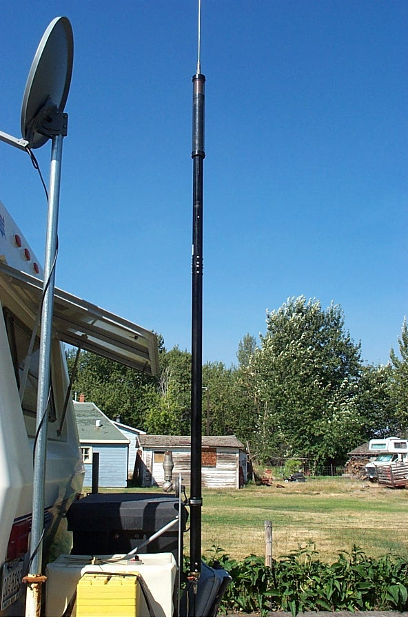
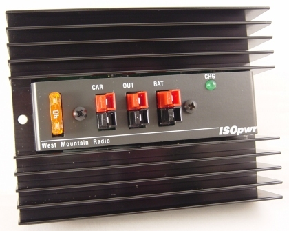
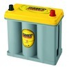
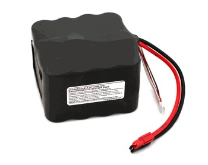
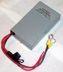
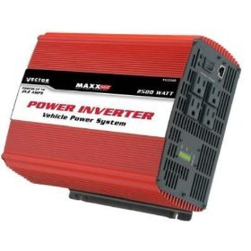
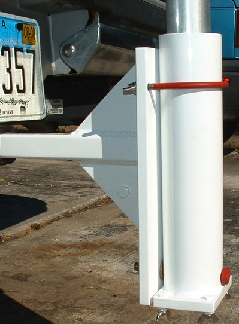
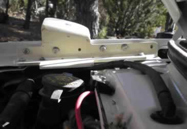
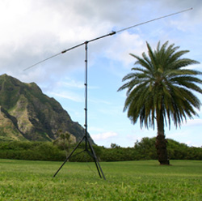
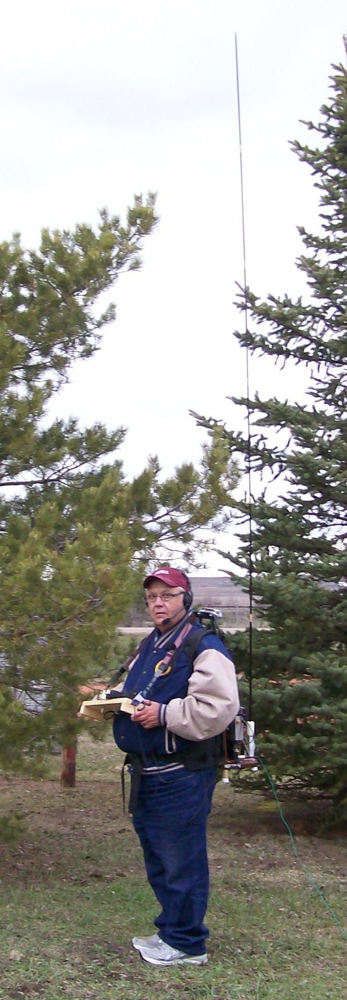

Recovered article. HTML body is from Common Crawl (text only); images came from the Sep 2022 iOS PDF:
Portable Operation.pdf ·
15 extracted images & links ·
15 of 15 images merged inline (aspect-ratio matched). Original src preserved on each
<img> as
data-original-src.
Contents: Basics; The Power Source; The House Battery; Other Batteries; Battery Boosters; Power Inverters; Antenna Choices; Pedestrian Mobile; Other things;
Basics

The premise of this web site has always been based on mobile-in-motion, but a select number of amateurs include stationary mobile as part of their operating. While most who do might just use their existing HF mobile antenna, there are better alternatives. Further, there are special requirements with respect to power, and even safety considerations which make stationary mobile (portable operation) a special case. Hence, this article.
Other than the antenna, the most important aspect is the power, especially when it comes from batteries. Such operation requires ancillary devices to protect, isolate, and charge secondary batteries. Typically, their ubiquitous in motor homes, and some RVs and trailers. While partly covered in the Alternator & Batteries article, they're included here too.
There is a hidden aspect with regard to portable operation, and that deals with minimizing ground losses when using ground-mounted vertical antennas. There are a few things you can do to help, but you're never going to duplicate base-station performance.
Personally, I've never operated stationary mobile, or portable, by any name. Yes, I've pulled over on a side street when I just had to have that DX contact, but that really doesn't count. This said, I have operated the ARRL Field Day more times than I wish to admit. The situation really isn't any different from what's being discussed here. The hardware perhaps is, maybe even the creature comforts, but the intrinsic (and logistic) requirements are identical.
☜Return☜
The Power Source
If you use a generator for power, you have to use standard precautions about gasoline filling and storage, exhaust fumes, and voltage stability. Most RVers know those rules, and follow them carefully as they know what might happen if they don't. It shouldn't be necessary to cover those here in any detail. It bears careful reading if you're unfamiliar with RV generator usage.
The following is sort of redundant for most RVers, as they already have what's commonly described as a house battery. They can be charged by a generator, solar panels, RV's engine, or a towing vehicle such as a pickup truck. However, there is one aspect which needs further explanation, and that's using the towing vehicle's electrical system to charge house batteries.
Modern, late-model vehicles monitor the output voltage, and current from the alternator. The prime reason is pollution control, but there are others. In these cases, suddenly applying the load from a discharged set of house batteries, to the vehicle's electrical system, can cause an error code to be written to the engine's CPU, causing the MIL (Maintenance Indicator Light) to illuminate; the use of a battery isolator notwithstanding. There are a couple of foolproof ways around the issue.
Most vehicles, designed to be used as a towing vehicle have special trailer towing packages available. Besides a trailer hitch, electrical connections are available to power the running lights, brake lights, etc. And, in almost every case, a house battery charging circuit. For example, the Honda Ridgeline's hookup provides a monitored, relay switched, 20 amp charging circuit. Some brands supply as much as 40 amps, but use a special high-current connector. It pays to investigate these options when shopping for a towing vehicle.


Lots of folks just use a simple battery isolator, and never have any problems (at least ones they know about). Simple diode isolators have a number of drawbacks, not the least of which is their forward voltage drop. They can also play havoc with the charging circuitry in some alternators. This leads some folks to use isolation relays, and they too have their drawbacks. There is one brand of isolator which combines the attributes of both, and that is the one made by Hellroaring®. It uses both diodes and FET switches in its design. It is also remotely controllable, which allows all of the batteries (two or three) to be combined if necessary. It is competitively priced, and available directly from the factory. If you have to use an isolator, this is the one to use.
There's new device just introduced by West Mountain Radio which portable operators will cherish, and that's the ISOpwr-Auxiliary Battery Isolator. It sells for about $80, and offers a few advantages over it competitors. First, it connects the vehicle’s battery system to an auxiliary battery, whenever the vehicle’s engine is running. When the engine is not running, the auxiliary battery is disconnected from the vehicle’s battery, thus equipment powered from the auxiliary battery never drains the vehicle’s battery! In other words, your automotive battery is never drained, and your auxiliary battery is always recharged by running the engine. If you need more details, visit their web site.
 Perfect Switch® makes both isolators and switches for high current applications, and both employ FET technology. One of their units is shown at right. One very good advantage is there are no contacts which could fuse together in a dead-short scenario. In fact, drawing current over their rating will cause them to disconnect, and require a reset. This is about as fail-safe as you can get.
Perfect Switch® makes both isolators and switches for high current applications, and both employ FET technology. One of their units is shown at right. One very good advantage is there are no contacts which could fuse together in a dead-short scenario. In fact, drawing current over their rating will cause them to disconnect, and require a reset. This is about as fail-safe as you can get.
Lastly, the use of any battery isolator, no matter how sophisticated, is no guarantee that it will circumvent problems with on-board BMS (Battery Monitoring Systems). This is especially true of vehicles which use a VQM (Voltage Quality Module), or similar system to maintain a high level SOC (State Of Charge). If in doubt, check with your dealer's service manager.
☜Return☜
The House Battery
Remember this: All lead acid batteries generate hydrogen gas during normal operation, and becomes excessive during overcharge conditions. Hydrogen gas is very explosive, and even a minor spark can ignite it. Any resulting explosion isn't a pretty sight, as the electrolyte is sulfuric acid! Since the gas is vented to the outside, flooded batteries shouldn't be used in enclosed areas like the trunk of a vehicle. AGM batteries outgas too, but the hydrogen gas is absorbed by the glass mat. However, overcharging can cause more gas to form than the mat can absorb. Therefore manufacturer's maximum charge rates shouldn't be exceeded.
Since most house batteries are mounted in enclosed spaces, the battery of choice is an AGM (Absorbent Glass Mat) type. Further, unlike a flooded battery, an AGM can be mounted in any position, even upside down! This said, any auxiliary battery should be installed in a battery box, and properly restrained. Doing so, also prevents accidental shorting of the exposed connections. The rule of thumb for battery restraints is 6Gs lateral and 4Gs vertical. The last thing you want is a 60 pound battery flinging acid all over the insides of your vehicle!

A typical lead-acid battery has an internal resistance at full charge of about .003 ohms although some types are slightly higher, and some slightly lower. Under direct short conditions, the maximum current can exceed 3,000 amps, and a decent quality AGM, almost 4,000 amps! Doing so can cause some batteries to self destruct, hurling sulfuric acid far and wide, so handle them accordingly! It is best to keep their plastic post caps on until you actually make the connections. When removing them, or installing them, the negative lead should be removed first, and installed last.
If you think proper fusing isn't required because you use a circuit breaker, think again! There isn't a low-voltage circuit breaker made that can handle much over 2,500 amps without welding their contacts closed on a break! So please read the following cautionary statement, especially if your house battery is a bunch of batteries in parallel!
If you wish to learn more about battery technology, then the Battery University is the site for you.
☜Return☜
Other Batteries

There are a variety of other battery technologies to choose from, and most are covered in detail on the Battery University site. The site will help you choose a battery for your specific application. What the site doesn't cover is battery packs.
For example, Buddipole sells a variety of battery packs designed for portable operation, like their 4S4P A123 shown at right. What is unique about this specific model is its 13.2 resting voltage. Unfortunately, the selling price (≈$300) reflects its uniqueness.
The reason I mention the Buddipole pack, is because it typically doesn't require a battery booster to be used (although a low voltage monitor is suggested). A lead acid (flooded or AGM) battery for example has a resting voltage of 12.2. Depending on the Ah rating, and the current draw applied, an lead acid battery may drop in voltage far enough to cause some transceivers to shut themselves off—hence the need for a battery booster.
Whatever battery technology you choose, proper care, maintenance, wiring, fusing, charging, and safe handling are important items of consideration.
☜Return☜
Battery Boosters

 It is important to maintain the battery voltage at, or very near, your transceiver's designated input voltage. This is why most portable operators opt for a Battery Booster. Known by at least a dozen names, they act like a switching power supply, and although the input voltage drops, the output remains steady. The one shown at left is a W4RRY unit, and the one below right is the MFJ unit. By the way, the November, 2008 issue of QST has a product review on these units including one made by TGE. I should add, that TGE now has models ranging up to 120 amps continuous! However, great care should be exercised in designing whatever battery bank, and charging system is in place. If not, you might find yourself out any juice!
It is important to maintain the battery voltage at, or very near, your transceiver's designated input voltage. This is why most portable operators opt for a Battery Booster. Known by at least a dozen names, they act like a switching power supply, and although the input voltage drops, the output remains steady. The one shown at left is a W4RRY unit, and the one below right is the MFJ unit. By the way, the November, 2008 issue of QST has a product review on these units including one made by TGE. I should add, that TGE now has models ranging up to 120 amps continuous! However, great care should be exercised in designing whatever battery bank, and charging system is in place. If not, you might find yourself out any juice!
Most of these units include a low voltage cutoff, but some don't which can lead to problems. As stated above, any nominal 12 volt lead acid battery is considered discharged when the voltage drops to 10.5 volts under load. In any case, battery voltage should be monitored.
 Martel Electronic's makes a low-current, two wire voltmeter that's a good choice to monitor battery voltage. It draws just 2 mils, so it can be left connected indefinitely. While we're on the subject, those voltmeters which have become ubiquitous is most GM vehicles aren't accurate enough for the job at hand, much less portable operation. It pays to have something better, especially if portable operation is your mainstay.
Martel Electronic's makes a low-current, two wire voltmeter that's a good choice to monitor battery voltage. It draws just 2 mils, so it can be left connected indefinitely. While we're on the subject, those voltmeters which have become ubiquitous is most GM vehicles aren't accurate enough for the job at hand, much less portable operation. It pays to have something better, especially if portable operation is your mainstay.
☜Return☜
Power Inverters

I've put power inverters under a separate heading for good reason; some are great, and some are not! Using one is fine, as long as you understand the ramifications, and limitations.
There are two major types; Modified sine wave (MSW) like the Vector unit shown at left, and pure sine wave (PSW). There is an excellent review article in the April 2009 issue of QST, which describes how they work. As noted in the article, MSW inverters are prone to generating RFI. While less expensive than PSW units, their extra cost is easy to justify when weighed against the cost of filtering out the RFI; a nearly impossible task!
One problem you might encounter when using MSW units, is using them to power devices which use switching power supplies. The staggered ramp up of the output voltage causes them to operate erratically. It doesn't happen all the time, but often enough to be of concern.
It should be mentioned that their efficiency rating changes with the load. At light load levels, efficiency is somewhat lower than it is at mid loading, and typically goes back down near full loading. Therefore, you should select one which matches your load requirements. Incidentally, there are models available which operate in reverse. When they're connected to the mains, they recharge the connected batteries. Except for large RVs, you generally don't see them, as they're very expensive.
There is another potential problem exacerbated by power inverters, and that is a ground loop. With one exception, RV manufacturers don't make the chassis of their coaches—bus, truck, and van manufacturers do that for them. Little if any thought goes into how things are grounded throughout most RVs, and if you're not into amateur radio, you'd probably never notice. Correcting built-in ground loop problems can be a very exasperating undertaking, especially when the coach and/or chassis manufacturer won't cooperate. Adding insult, few coach builders have published wiring schematics, and when they do they're often incorrect.
☜Return☜
Antenna Choices
Any antenna is better than none some will argue, but it is very frustrating when you can't make reliable contacts. Your average HF mobile antenna is at a disadvantage compared to even a simple dipole, no matter how it is mounted. That fact doesn't mean you can't use one, but there are better choices.
One way to improve an HF mobile antenna's performance is to reduce the inherent ground losses, but you have to jump through a few hoops. For example, as lot of RVers mount their antenna's in the RV's ladder. To be honest, this is probably the worse place as the ladder is a very poor ground plane. As a result, ingress and egress common mode currents cause havoc with both receive and transmit functions. Some, apply radials to the bottom of the ladder assuming that will improve the situation. It doesn't, and in fact can cause the common mode problem to increase! Where the radials need to be placed, is at the base of the antenna. Quite obviously, in this case, it is a logistics nightmare. For anyone contemplating installing radials to improve their existing, or future antenna, should read the articles on radials published by Rudy Severns, N6LF. Take note of the differences between the requisite lengths between ground, and elevated installations.

Here's some food for thought about antenna mounts at left, which are ideal for portable operation. In this case, the mount uses the trailer hitch receiver, and is sturdy enough to support a fairly large mast. That mast could be used to support a dipole, and if properly insulated, it could be the antenna itself. With Rudy's aforementioned data in hand, a few ground radials, a decent auto-coupler (tuner), and you're in business.

This really isn't an antenna design primer, but rather a suggestion about what can be done. There's one thought to keep in mind; there isn't anything special about a 43 foot vertical, all the current rage about them notwithstanding. Even a 30 foot insulated mast, with an auto-coupler mounted at the base, and a few radials will work much better than most HF mobile antenna installations.
Let's not forget about HF mobile antennas just yet. On the right is a special bracket designed by Hal Wilson, W5BUF. The mount appears to be tilted, but that's caused by the camera angle used. There are other photos of the mount in the Photo Gallery. It illustrates what can be done, and I might add, it is hole less! In this case, the antenna clears the RV body by several feet; an important attribute if efficiency is to be maintained.

Buddipole makes some very unique portable antenna systems like the one shown. Although individual parts can be purchased, the complete BuddyPole Deluxe package sells for $400. There are literally dozens of antenna combinations which can be made up from the kit, from dipoles, to verticals.
These antenna are not meant for permanent installations. Rather, they're for the backpackers, Field Day activities, Em-Comm, or whenever an easy to erect, temporary antenna is needed. The elements themselves have a piece of shock cord throughout their length. It takes just a moment to extend them, and their tip is adjustable to aid in matching to the frequency in use.
Buddipole also sells other accessories for portable use, not the least of which is nanophosphate battery packs, and chargers. Nanophosphate batteries actually have better current, and voltage curves than any currently available battery technology. Their fast charging capabilities make them the battery of choice for portable use. Check out the link for more information.
☜Return☜
Pedestrian Mobile

I mentioned Backpackers above, but there is another class of portable operation often referred to as Ped Mobile. Whether actually walking as the name implies, it isn't too far of a stretch to include pedal mobile; that's bicycle mobile in other words. The aforementioned Buddipole is often deployed in either case, as their light weight, easy to deploy nature, makes them a favorite.
The lack of a large power source (alternator, generator, etc.) typically dictates QRP power levels, but with an adequate battery system, even 100 watts PEP is doable. The preferred mode by most ped mobile operators is CW for very obvious reasons. I should mention, that at least one bicycle mobile operator I know, uses a modified bicycle generator to charge up the battery. Now if we could just modify one of those shaker-type, rechargeable flashlights affixed to a ped mobile operator's leg to charge the battery, we'd be in business!
We all know that even a fairly large vehicle represents an inadequate ground plane, well into the VHF region. Imagine then, the problems faced by ped mobile operators, with little metal mass surrounding them? Yet, with some attention to detail, a viable ped mobile station can be a reality. While you won't set the world on-fire signal-wise, it is nonetheless amazing what can be done, if one has the patience. Ken Muggli, KØHL, has put some very rare North Dakota counties (he has since moved to Washington state) on the air while walking away over 122 pounds of excess weight! Congratulations to him!
If you click to enlarge the photo, look for the nearly invisible, green trailing wire (radial?). Wouldn't it be nice if we could do that when operating from our vehicles?
☜Return☜
Other Things
There are a few things you can do when portable, that are dangerous when in motion, not the least of which is CW. So of course is any digital mode, including slowscan! Just remember, some of these modes are full-duty cycle, and require a more substantial power source, than just batteries alone. Here too, the RVbasics site can be of help in selecting sources, be that a generator, or a solar array.
There are a lot of other considerations, and most of them parallel your average mobile installation. Wiring, safety, and above all, neatness counts! Of course, we don't want to forget to notify our insurance company that we have amateur radio gear installed in our RV. You've done that already, correct?
☜Return☜
Home


{kind=link}
{kind=link}
{kind=link}
{kind=link}
{kind=link}
{kind=link}
{kind=link}